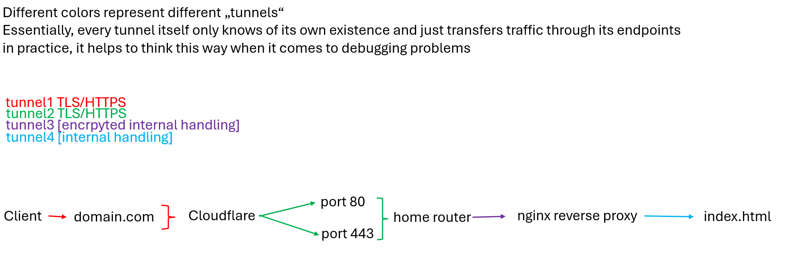
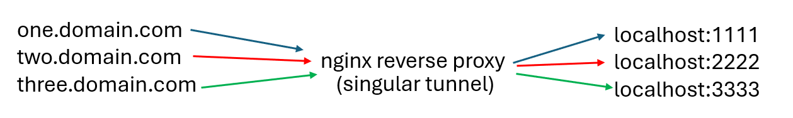

To server our website, clients somehow need to connect to our server. Usually this can be done by opening a port on our router/firewall. This works fine if you only want to host a single website and/or service, but if you want to expose more than one, you normally have to serve it from a different IP. We can circumvent this by using a reverse proxy. It works by bundling all traffic and sending it trough only one exposed tunnel. This is illustrated below. Furthermore, nginx as built-in functionality for serving .html based sites on the web. We use both features in this case. 
nginx/etc/nginx/conf.dserver {
listen 80;
server_name domain.com;
root path/to/the/folder/containing/your/index/file;
}
index.html file and write Hello World into itnginx -t to check if everything is workingA record with your full domain name pointing at your IP. You can get your IP on ipleak.netOur dns records now point to our current IP. Now, for a lot of people ISPs dont give them a static IP address. As such, the IP we assigned will change and wont be valid withing a few hours or days. We can fix this by dynamically updating our DNS records to cloudflare.
Personally, ive been using qdm12's ddns-updater docker container for this. In my case, im using the specified docker-compose.yml.
To get it up and running, download the docker-compose.yml and change the parameteres to your need. This likely boils down to changing your port and specifiying a config.
As of now all our traffic passes from client <-> server without being encrpyted. This essentially allows anyone to read and potentially intercept our traffic with out our knowledge. To change this, we can use certbot. It should be preinstalled on most common distros.
certbot gives out free TLS/HTTPS certificates authorized by the EFF.
Usage goes as follows:
cerbot --nginx and enter the number corresponding to your domainserver {
listen 80;
server_name one.domain.com;
location / {
proxy_pass http://ip:port;
}}
nginx -tA record with your subdomain.domain.com pointing to your addresscertbot --nginx